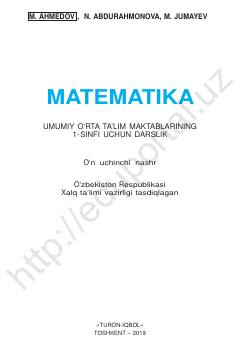

M11-sinf o'quvchilari uchun matematika darsligi va boshlang'ich hisob-kitob ko'nikmalari.
Mazkur darslik umumiy o'rta ta'lim maktablarining 1-sinf o'quvchilari uchun mo'ljallangan bo'lib, 1 dan 10 gacha bo'lgan sonlar hamda 10 ichida qo'shish va ayirish amallarini o'rgatadi. Kitobda narsalarning to'plamlari, ularning xossalari, o'lchamlari bo'yicha taqqoslashga doir qiziqarli mashqlar keltirilgan. Nashr O'zbekiston Respublikasi Xalq ta'limi vazirligi tomonidan tasdiqlangan.